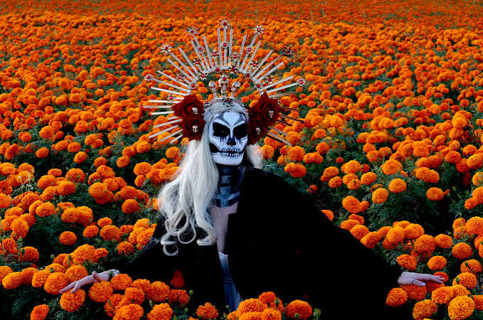

El Día de Muertos es una festividad tradicional mexicana
que celebra el reencuentro temporal entre los vivos y sus
seres queridos fallecidos, basada en la creencia de que las
almas regresan a casa para convivir con sus familias. Reconocida
como Patrimonio Cultural Inmaterial de la Humanidad por la UNESCO,
esta celebración se aleja del luto tradicional y ve a la muerte como
una fase natural de un ciclo infinito.
La ofrenda del Día de Muertos es una tradición mexicana que se realiza
para recordar y honrar a los seres queridos que han fallecido.
Cada elemento tiene un significado especial.
Las velas representan la luz y la esperanza.
Se cree que iluminan el camino de las almas para que puedan llegar a la ofrenda y visitar a sus familiares.
El agua simboliza la vida y la purificación.
Se coloca en la ofrenda para que las almas puedan beber y refrescarse durante su viaje.
Las flores simbolizan la vida y la belleza.
Se colocan en la ofrenda para darle un toque de color y alegría a la celebración.
Las fotografías de los seres queridos fallecidos se colocan en la ofrenda
para recordar su presencia y mantener viva su memoria.
El copal es un aroma que se utiliza para purificar el espacio y guiar a las almas hacia la ofrenda.
Se quema como parte de la ceremonia para honrar a los difuntos.
En el contexto del Día de los Muertos,
la comida no se prepara únicamente para ser consumida,
sino para ser ofrecida. Las ofrendas, también conocidas como altares,
incluyen una variedad de alimentos que tienen como propósito recibir a las almas que
regresan durante estas fechas.
Cada platillo colocado en el altar responde a una intención específica: agradar al difunto,
recordarlo y recrear un ambiente familiar. Esta práctica refleja una visión particular de la muerte,
en la que no existe una ruptura definitiva, sino una continuidad simbólica entre la vida y el más allá
La simbología del Día de Muertos incluye elementos como la Catrina de José Guadalupe Posada (1912),
la flor de cempasúchil, el papel picado, las velas, el agua, la sal y el pan de muerto,
cada uno con significados espirituales que guían, purifican y honran a las almas
El Día de Muertos es una celebración tradicional mexicana con profundas raíces prehispánicas y una
mezcla con la cultura católica llegada con los españoles. Su historia y origen son fascinantes y
representan una forma única de honrar a los seres queridos que han fallecido.
Origen prehispánico
Antes de la llegada de los españoles, diversos pueblos indígenas de México, como los mexicas,
mayas, purépechas y otros, ya tenían costumbres para honrar a sus muertos. Estas ceremonias
generalmente se realizaban en épocas específicas del año y podían durar varios días. Por ejemplo,
los mexicas celebraban un festival dedicado a la diosa Mictecacíhuatl, conocida como la "Dama de la Muerte",
durante el noveno mes del calendario solar, que coincide aproximadamente con el mes de agosto.
Estas festividades tenían un enfoque vitalista y cíclico: la muerte no era vista como un fin,
sino como una etapa en un ciclo de vida, muerte y renacimiento.
Influencia española
Con la llegada de los españoles en el siglo XVI y la introducción del catolicismo, estas celebraciones
indígenas se fusionaron con las festividades católicas de Todos los Santos (1 de noviembre) y el Día de los
Fieles Difuntos (2 de noviembre). Así, la tradición indígena se mezcló con elementos europeos como las misas,
el uso de velas y algunas oraciones, pero manteniendo la esencia y el simbolismo propios.
La celebración actual
Hoy en día, el Día de Muertos se celebra principalmente el 1 y 2 de noviembre, dedicando el primer día a los "angelitos"
(niños fallecidos) y el segundo a los adultos. Las familias construyen altares con fotografías, flores de cempasúchil, comida,
calaveras de azúcar, objetos que pertenecieron a los difuntos, papel picado, velas y otros elementos simbólicos.
La festividad es un momento para recordar a los seres queridos, para convivir con la memoria de los muertos y celebrar la vida con alegría.
En 2008, la UNESCO reconoció el Día de Muertos como Patrimonio Cultural Inmaterial de la Humanidad por su valor cultural y simbólico.
Las calaveritas literarias son poemas cortos, divertidos y, en ocasiones,
satíricos que se escriben durante el Día de Muertos en México.
En ellas, la muerte aparece como un personaje que visita a personas,
como estudiantes, maestros, amigos o familiares.
Su propósito es hacer reír y recordar la tradición mexicana de una manera creativa.
La Catrina es uno de los símbolos más representativos del Día de Muertos en México.
Es una figura de una calavera vestida con ropa elegante y un sombrero adornado.
Fue creada originalmente por el ilustrador mexicano José Guadalupe Posada
y posteriormente popularizada por el muralista Diego Rivera.
La Catrina representa la idea de que la muerte llega para todos,
sin importar la posición social o la riqueza, y se ha convertido en un símbolo de la cultura mexicana.